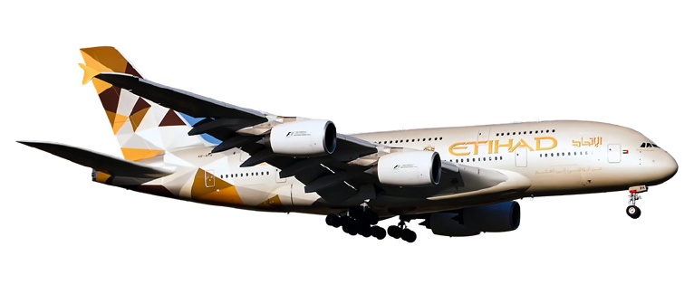

Er zijn verschillende soorten vliegtuigen van etihad. Enkele voorbeelden zijn:
-

- Airbus A380-800
- Airbus A330-200
- Airbus A320-200
- Boeing 787-10
- Boeing 777-9
- Boeing 777-200LR
De Airbus A380 is een wide-body vliegtuig vervaardigd door Airbus. Het is 's werelds grootste passagiersvliegtuig. Airbus-studies begonnen in 1988 en het project werd in 1990 aangekondigd om de dominantie van de Boeing 747 op de langeafstandsmarkt uit te dagen. Het toenmalige A3XX-project werd gepresenteerd in 1994; Airbus lanceerde op 19 december 2000 het A380-programma van € 9,5 miljard ($ 10,7 miljard). Het eerste prototype werd onthuld in Toulouse op 18 januari 2005, met zijn eerste vlucht op 27 april 2005. Problemen met elektrische bedrading veroorzaakten een vertraging van twee jaar en de ontwikkelingskosten stegen tot € 18 miljard. Het behaalde zijn typecertificaat op 12 december 2006 van het European Aviation Safety Agency (EASA) en de Amerikaanse Federal Aviation Administration (FAA). Het werd voor het eerst geleverd aan Singapore Airlines op 15 oktober 2007 en werd op 25 oktober in gebruik genomen. De productie bereikte een piek van 30 per jaar in 2012 en 2014. Airbus geeft echter toe dat de investering van $ 25 miljard in het vliegtuig niet kan worden terugverdiend. Op 14 februari 2019, nadat Emirates zijn laatste bestellingen had verlaagd ten gunste van de A350 en de A330neo, kondigde Airbus aan dat de productie van de A380 tegen 2021 zou eindigen. Het dubbeldeksvliegtuig over de volledige lengte, ook wel de superjumbo genoemd, heeft een typische capaciteit van 525 zitplaatsen, hoewel het is gecertificeerd voor maximaal 853 passagiers. Hij wordt aangedreven door vier Engine Alliance GP7200- of Rolls-Royce Trent 900-turbofans met een bereik van 8.000 NMI (14.800 km). In augustus 2020 heeft Airbus 251 vaste bestellingen ontvangen en 242 vliegtuigen afgeleverd; Emirates is met 123 bestelde A380-klanten de grootste A380-klant, waarvan 115 geleverd.
De Airbus A330 is een wide-body vliegtuig ontworpen en geproduceerd door Airbus. Airbus ontwierp verschillende afgeleiden van de A300, het eerste vliegtuig in het midden van de jaren 70. Daarna begon het bedrijf met de ontwikkeling van de A330 twin-jet parallel aan de A340 quadjet en lanceerde beide ontwerpen met hun eerste bestellingen in juni 1987. De A330-300, de eerste variant, maakte zijn eerste vlucht in november 1992 en trad in dienst bij Air Inter in Januari 1994. De iets kortere A330-200-variant volgde in 1998. De A330 deelt zijn casco met de vroege A340-varianten, met twee hoofdonderstelpoten in plaats van drie, lagere gewichten en iets verschillende lengtes. Beide vliegtuigen hebben fly-by-wire-bediening en een vergelijkbare glazen cockpit om de gemeenschappelijkheid te vergroten. De A330 was het eerste vliegtuig van Airbus dat een keuze bood uit drie motoren: de General Electric CF6, Pratt & Whitney PW4000 of de Rolls-Royce Trent 700. De A330-300 heeft een bereik van 11.750 km of 6.350 nmi met 277 passagiers, terwijl de kortere A330-200 kan 13.450 km of 7.250 nmi afleggen met 247 passagiers. Andere varianten zijn het speciale vrachtschip A330-200F, de militaire tanker A330 MRTT en de zakenjet ACJ330. De A330 MRTT werd voorgesteld als de EADS / Northrop Grumman KC-45 voor de KC-X-competitie van de Amerikaanse luchtmacht, maar verloor in hoger beroep van de Boeing KC-46 na een eerste overwinning. In juli 2014 kondigde Airbus de vernieuwde A330neo (nieuwe motoroptie) aan, bestaande uit de A330-800 / 900, die in december 2018 in dienst kwam bij TAP Air Portugal. Met de exclusieve, efficiëntere Trent 7000 turbofan en verbeteringen, waaronder sharklets, biedt het tot 14% lager brandstofverbruik per stoel. Eerdere A330's (-200 / 200F / 300) heten nu A330ceo (huidige motoroptie). In oktober 2020 stonden er 1.818 bestellingen voor A330, waarvan 1.505 geleverd en 1.436 in bedrijf. De grootste operator was Turkish Airlines met 66 vliegtuigen. Met de A330 heeft Airbus zijn marktaandeel voor wide-body kunnen vergroten. Het concurreert met de Boeing 767 en kleinere varianten van de 777 en de 787. Het wordt aangevuld door de grotere Airbus A350 XWB die de A340 opvolgde.
De Airbus A320-familie zijn vliegtuigen met een smalle romp die zijn ontworpen en geproduceerd door Airbus. De A320 werd gelanceerd in maart 1984, vloog voor het eerst op 22 februari 1987 en werd in april 1988 geïntroduceerd door Air France. Het eerste lid van de familie werd gevolgd door de langere A321 (voor het eerst geleverd in januari 1994), de kortere A319 (april 1996) en de nog kortere A318 (juli 2003). De eindassemblage vindt plaats in Toulouse, Frankrijk; Hamburg in Duitsland; Tianjin in China sinds 2009; en in Mobile, Alabama in de Verenigde Staten sinds april 2016. De twinjet heeft een dwarsdoorsnede van zes naast elkaar en wordt aangedreven door ofwel CFM56- of IAE V2500-turbofans, behalve de door CFM56 / PW6000 aangedreven A318. De familie was een pionier in het gebruik van digitale fly-by-wire en side-stick vluchtbesturingen in vliegtuigen. Varianten bieden maximale startgewichten van 68 tot 93,5 t (150.000 tot 206.000 lb), voor een bereik van 5.740-6.940 km (3.100-3.750 NMI). De 31,4 m (103 ft) lange A318 biedt doorgaans plaats aan 107 tot 132 passagiers. De 124-156 stoelen A319 is 33,8 m (111 ft) lang. De A320 is 37,6 m (123 ft) lang en biedt plaats aan 150 tot 186 passagiers. De 44,5 m (146 ft) A321 biedt 185 tot 230 zitplaatsen. De Airbus Corporate Jets zijn business jet-versies. In december 2010 kondigde Airbus de A320neo met nieuwe motor aan (nieuwe motoroptie), die in januari 2016 in dienst kwam bij Lufthansa. Met efficiëntere turbofans en verbeteringen, waaronder sharklets, biedt het tot 15% lager brandstofverbruik. Eerdere A320's heten nu A320ceo (huidige engine-optie). In oktober 2019 overtrof het de Boeing 737 en werd het het best verkochte vliegtuig. In oktober 2020 waren in totaal 9.572 vliegtuigen geleverd aan meer dan 330 operators, met 9.053 vliegtuigen in dienst. American Airlines was de grootste operator met 425 vliegtuigen. De lopende bestellingen waren 6.010, voor een totaal van 15.582 bestellingen. De A320ceo concurreerde aanvankelijk met de 737 Classic en de MD-80, daarna hun opvolgers, de 737 Next Generation en de MD-90, terwijl de 737 MAX het antwoord van Boeing is op de A320neo.
De Boeing 787 Dreamliner is een wide-body straalvliegtuig vervaardigd door Boeing Commercial Airplanes. Na het laten vallen van zijn Sonic Cruiser-project, kondigde Boeing op 29 januari 2003 de conventionele 7E7 aan, gericht op efficiëntie. Het programma werd gelanceerd op 26 april 2004 met een bestelling van 50 stuks van All Nippon Airways (ANA), gericht op een introductie in 2008. Op 8 juli 2007 werd het prototype uitgerold zonder grote systemen, en liep het meerdere vertragingen op tot zijn eerste vlucht op 15 december 2009. Typecertificering werd ontvangen in augustus 2011 en de eerste 787-8 werd in september 2011 afgeleverd voordat het commercieel werd ingevoerd. dienst op 26 oktober 2011, met ANA. Bij de lancering streefde Boeing naar 20% minder brandstofverbruik dan vervangen vliegtuigen zoals de Boeing 767, met 200 tot 300 passagiers op point-to-point-routes tot 8.500 NMI (16.000 km), een verschuiving van hub-and-spoke-reizen. De twinjet wordt aangedreven door General Electric GEnx of Rolls-Royce Trent 1000 high-bypass turbofans, het is het eerste vliegtuig met een casco dat voornamelijk is gemaakt van composietmaterialen, en maakt veel gebruik van elektrische systemen. Uiterlijk is hij herkenbaar aan zijn cockpit met vier ramen, hellende vleugeltips en geluiddempende punthaken op de motorgondels. Ontwikkeling en productie zijn steeds meer afhankelijk van onderaannemers over de hele wereld, met eindassemblage in de Boeing Everett-fabriek in Washington of Boeing South Carolina in North Charleston vanaf 2020. De aanvankelijke, 57 m lange 787-8 biedt plaats aan 242 passagiers. een bereik van 7.355 NMI (13.620 km), met een 502.500 pond (228 t) MTOW vergeleken met 560.000 pond (254 t) voor latere varianten. De uitgerekte 787-9, 206 voet (63 m) lang, kan 7.635 NMI (14.140 km) vliegen met 290 passagiers; het is op 7 augustus 2014 in dienst getreden bij ANA. De verder uitgerekte 787-10, 224 ft (68 m) lang, met plaats voor 330 zitplaatsen boven 6.430 NMI (11.910 km), trad op 3 april 2018 in dienst bij Singapore Airlines. Bij de eerste operaties werden verschillende problemen ondervonden die werden veroorzaakt door de lithium-ionbatterijen, met als hoogtepunt bij branden aan boord. In januari 2013 heeft de Amerikaanse FAA alle 787's aan de grond gehouden totdat het in april 2013 het herziene batterijontwerp goedkeurde. Vanaf maart 2020 had de 787 bestellingen voor 1.510 vliegtuigen van 72 geïdentificeerde klanten. Vanwege de stijgende productiekosten heeft Boeing $ 32 miljard aan het programma uitgegeven; schattingen voor het aantal vliegtuigverkopen dat nodig is om break-even te draaien, variëren tussen 1.300 en 2.000.
De Boeing 777X is de nieuwste serie van de tweemotorige Boeing 777-familie met lange afstand en brede romp van Boeing Commercial Airplanes. De 777X is voorzien van nieuwe GE9X-motoren, nieuwe composietvleugels met opvouwbare vleugeltips, grotere cabinebreedte en zitcapaciteit, en technologieën van de Boeing 787. De 777X werd in november 2013 gelanceerd met twee varianten: de 777-8 en de 777-9. De 777-8 biedt plaats aan 384 passagiers en heeft een bereik van 8.730 NMI (16.170 km), terwijl de 777-9 plaats biedt aan 426 passagiers en een bereik van meer dan 7.285 NMI (13.500 km). De 777-9 vloog voor het eerst op 25 januari 2020, met leveringen die naar verwachting in 2022 zullen beginnen. De 777-9 wordt uitgerekt met drie extra rijen stoelen en vliegt 250 NMI (460 km) verder dan de 777-300ER met hetzelfde gewicht. Het is 2,9 m (9,4 ft) langer dan de -300ER voor een lengte van 76,7 m (251 ft 9 in). Het biedt plaats aan doorgaans 426 passagiers over een bereik van 7.285 NMI (13.500 km). Boeing bevroor zijn ontwerp in augustus 2015 en zou in 2017 met de eerste montage beginnen. Het operationele leeggewicht groeide van de 777-300ER's 373.500 tot 400.000 pond (169.400 tot 181.400 kg), iets meer dan, voor het doel van -9. Waarderingsspecialist Avitas, genoteerd op $ 442 miljoen, schat de werkelijke aankoopprijs van -9 op ongeveer $ 200 miljoen. In 2014 schatte Aspire Aviation het leeggewicht van de fabrikant op 362.000 en 415.000 pond (164.000 en 188.000 kg) vanwege het operationele leeggewicht met 300 stoelen in vier klassen. In 2017 schatte Seeking Alpha, een door crowd-sourced stockadvies bestemde website, een leeggewicht van de fabrikant van 370.000 pond (167.829 kg) en een leeggewicht van 407.000 pond (184.600 kg). De eerste vlucht van de 777-9 was op zaterdag 25 januari 2020. De 777-9 moet langer zijn dan het vorige langste vliegtuig, de 76,25 m (250 ft 2 in) Boeing 747-8.
The 777-200LR ("LR" for Long Range), the C-market model, entered service in 2006 as one of the longest-range commercial airliners. Boeing nicknamed it Worldliner as it can connect almost any two airports in the world, although it is subject to ETOPS restrictions. It holds the world record for the longest nonstop flight by a commercial airliner. It has a maximum design range of 8,555 nautical miles (15,844 km) as of 2017. The -200LR was intended for ultra long-haul routes such as Los Angeles to Singapore. Developed alongside the -300ER, the -200LR features an increased MTOW and three optional auxiliary fuel tanks in the rear cargo hold. Other new features include extended raked wingtips, redesigned main landing gear, and additional structural strengthening. As with the -300ER and 777F, the -200LR is equipped with wingtip extensions of 12.8 ft (3.90 m). The -200LR is powered by GE90-110B1 or GE90-115B turbofans. The first -200LR was delivered to Pakistan International Airlines on February 26, 2006.Twelve different -200LR customers took delivery of 60 aircraft, with one unfilled order. Airlines operated 50 of the -200LR variant as of July 2018. Emirates is the largest operator of the LR variant with 10 aircraft. The closest competing aircraft from Airbus are the discontinued A340-500HGW and the current A350-900ULR.